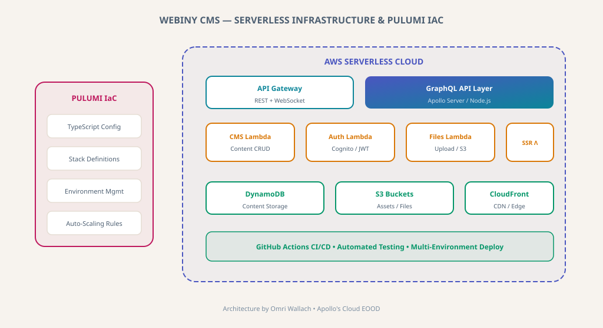

Serverless Infrastructure & Pulumi IaC for Webiny CMS
Building serverless infrastructure with Pulumi Infrastructure as Code and GraphQL API for Webiny's open-source headless CMS platform.

Webiny CMS — Serverless Infrastructure & Pulumi IaC Architecture
Context
Webiny is an open-source headless CMS built on serverless AWS infrastructure. I contributed to the core infrastructure layer, developing Pulumi IaC configurations and building the GraphQL API layer that powers the CMS content management capabilities.
Engineering Challenges
Serverless Architecture at Scale
Designing AWS Lambda functions that handle CMS operations efficiently while managing cold starts and concurrency.
Infrastructure as Code
Building modular Pulumi stacks in TypeScript that enable multi-environment deployment for the open-source community.
GraphQL API Design
Implementing a flexible GraphQL schema that supports dynamic content types and complex queries.
Architectural Solutions
Pulumi IaC
TypeScript-based infrastructure with modular stack definitions for Lambda, DynamoDB, S3, and CloudFront.
GraphQL API
Apollo Server with dynamic schema generation for content types.
Serverless Functions
AWS Lambda for CMS CRUD, authentication (Cognito), and file management.
CI/CD & Community
GitHub Actions with automated testing for open-source contribution workflows.
Measurable Impact
Serverless Scale
Infrastructure handles CMS operations with zero server management overhead.
Community Ready
Pulumi stacks enable one-command deployment for open-source users.
Cost Efficiency
Serverless architecture provides pay-per-use pricing model.
API Flexibility
GraphQL enables efficient, type-safe content queries.